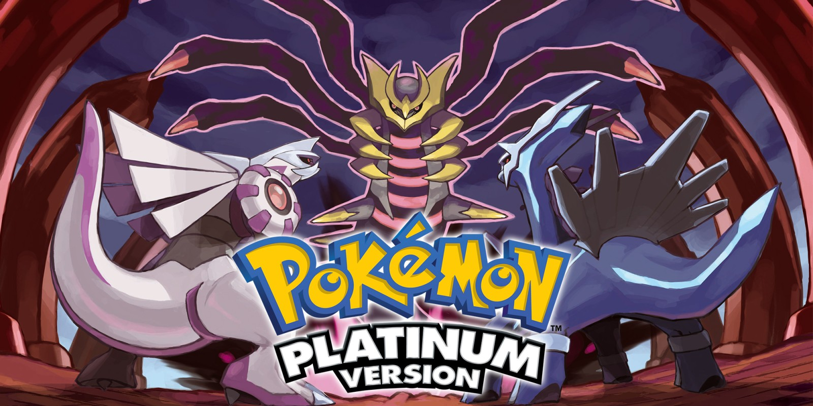

Nintendo DS
- Relased: November 21, 2004
- Sales: 154.02 million
- Most Sold Game: New Super Mario Bros.
- Ranking (in sales): 1st
The Nintendo DS is not too far a departure from its predecessor the Gameboy Advance, and yet its new features let it stand out as the best selling hand-held console to date. The DS, standing for Dual Screen, added and extra screen to the design of the Gameboys and other features such as wireless communications, a microphone, and eventually a camera. The big new feature that these consoles boasted was the lower touch screen that allowed for a new play style and a new brand of games. The DS, being such as popular hand-held console with such a long lifetime, has countless new and different games, including many spin-offs, ports, and remakes of home console games.
Games
Mario Vs Donkey Kong: Mini-Land Mayhem!
- Relased: November 14, 2010
- Sales:
- Rating: 8/10
- Genere: Puzzle
Mini-Land Mayhem is a puzzle game that invokes adding add removing elements from a map in order to lead your army of minis to the exit. The game's puzzles vary in style, all of them being solvable with ease, but some do require a little thought. The game also includes boss fights against Donkey Kong that require careful planing and execution to defeat the Kong. In addition to the main game play, the game has an unlockable level designer where players can make and play their own puzzles. Overall, this game is simple and not too challenging, making it prefect for younger players or those how want a little mental stimulation.
Lego Battles
- Relased: June 9, 2009
- Sales:
- Rating: 7/10
- Genere: Real-time Strategy
Lego Battles is a simple battle-field strategy game that focuses on completing missions and destroying your enemies. The game includes 3 different stories to play with 6 different armies, each one having it sown strengths and weaknesses. Lego Battles features different classes of characters, buildings, and machines, each having their own abilities and each character and machine having its own stats. While it sounds complicated, the game is actually simple and fun once you get the hang of it. It is especially fun to plan your army, construct your base, and fight against your friends on the brick battlefield.
Pokemon HeartGold and SoulSilver
- Relased: March 14, 2010
- Sales: 12.72 million
- Rating: 9/10
- Genere: Role-playing
A revival of the Gameboy classic, Pokemon Heart Gold and Soul Silver are the recreated versions of Gold and Silver, titles that revolutionized the Pokemon franchise. It’s meant for Pokemon fans who have wanted to play the Gameboy titles, but cannot obtain the device and/or the cartridges. Featuring over all Pokemon up to 2009 to capture and trade, Pokemon HGSS introduces new features to bring back old players, challenging everyone to be the best no one ever was.
Pokemon Diamond and Pearl
- Relased: April 22, 2007
- Sales: 17.67 million
- Rating: 8/10
- Genere: Role-playing
The first Pokemon games to be released on the DS, they are one of the highest selling games ever released on the DS. It introduced a wide scale multiplayer function allowing people from all over the world to battle and trade. It still features the same gameplay as every other game, is recommended to anyone who enjoys RPGs.
Pokemon Platinum

- Relased: March 22, 2009
- Sales: 7.06 million
- Rating: 8/10
- Genere: Role-playing
The sequel to Pokemon Diamond and Pearl, Platinum is essentially a more refined version of the two games. Platinum expands upon the plot of its predecessors and adds more post-game content and minigames. This game can be picked up without knowing much about Pokemon or the previous games as it starts off quite fresh and explains everything in detail. I recommend this game over Diamond and Pearl, and to anyone new to the Pokemon franchise.
Pokemon Black and White
- Relased: March 6, 2011
- Sales: 15.64 million
- Rating: 9/10
- Genere: Role-playing
A new installment in the Pokemon franchise, Black and White breathes new life into the franchise. Featuring a more detailed pixel art style, a whole new region to explore, and a new battle types, these games can easily be picked up by people new to Pokemon. Black and White generally keep the same formula the previous games had and is recommended to any Pokemon fans.
Pokemon Black 2 and White 2
- Relased: October 7, 2012
- Sales: 7.81 million
- Rating: 9/10
- Genere: Role-playing
The sequels to the Black and White games, Black 2 and White 2 take place 2 years after the original games. The sequels essentially recycle their predecessors, focusing on filling missing gaps in the plot from the previous game while adding a few new features. It is not any special Pokemon game, but is recommended only to those who want to play the previous games once more.